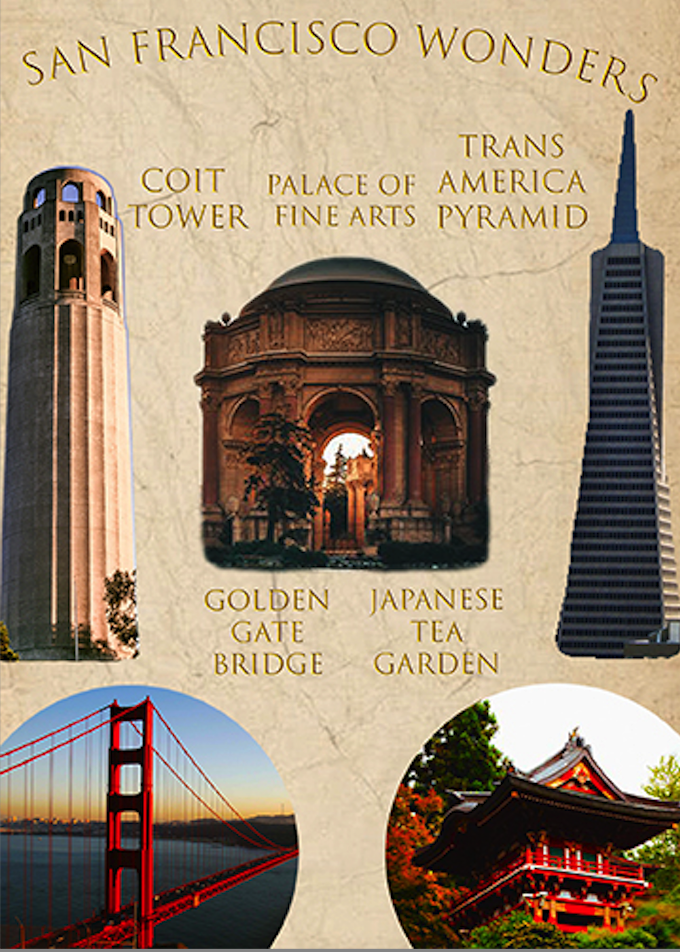
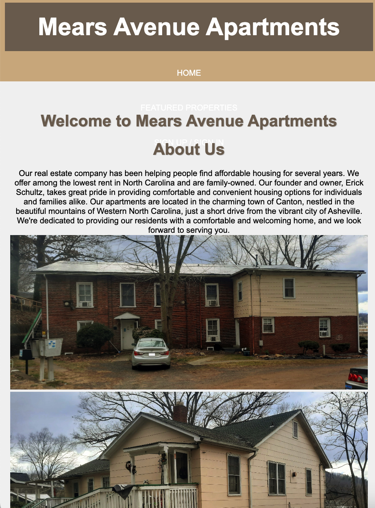
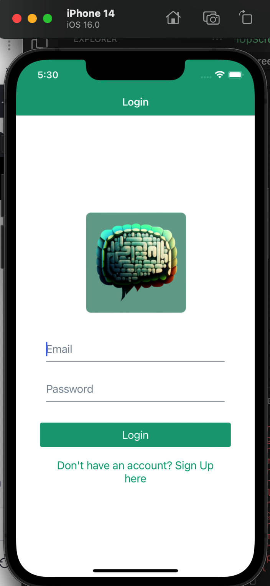

Portfolio
Two-Player Tic-Tac-Toe Game App
This mobile app project is a classic Tic-Tac-Toe game designed for two players. The app allows players to take turns placing their respective symbols ("X" and "O") on a 3x3 grid with the goal of aligning three of their symbols in a row, column, or diagonal. The app keeps track of game statistics such as player names, wins, losses, and the number of times played. The user interface is designed to be intuitive and user-friendly, providing an enjoyable gaming experience for players of all ages.

San Francisco Tourist Spots
This graphic design project was requested by the San Francisco city council to promote tourism in the city. The design features five iconic landmarks of the city, with a focus on encouraging travelers to visit these locations. The project also included the creation of a social media campaign and print materials.
Grand Canyon Essentials
This graphic design project was requested by an outdoor equipment retailer to showcase the essential items for a visit to the Grand Canyon. The designs of the items were created using Adobe Illustrator and Photoshop, with a focus on simplicity and practicality. The project also included the creation of a print catalog and social media campaign.

Real Estate Management Site
This website project was requested by a property management company to manage a rental complex. It includes features such as property listings, a contact form, and a map of the complex. The project also included the creation of a brand identity and social media campaign. React and Node.js were the core technologies used.
Texting App (In Progress)
This mobile app project was requested by a startup company to incorporate AI and machine learning technologies to provide personalized responses to users. The app is built using React Native for the front-end and Python for the back-end. The project also includes the creation of a brand identity and social media campaign. The goal of the app is to improve communication between businesses and customers.
